使い方
はじめに
AI が講師になって、あなた専用の連続講座を1回ずつ作ります。
できること
テーマを言うか、教科書や論文の PDF を AI エージェント（Codex や Claude Code など）に渡して、「講座を作って」と頼みます。全体の地図（全何回で、何を学ぶか）を決めたあと、 1回分ずつスライドと原稿が届きます。
原稿のページで疑問点にコメントを書き、確認問題に答えて渡すと、答えのデッキが届きます。つまずいた所は、次の回の冒頭で補われます。
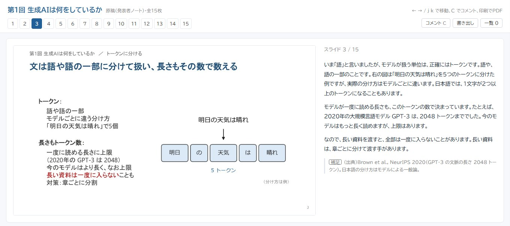
見本のスライドを全部見る（15枚）
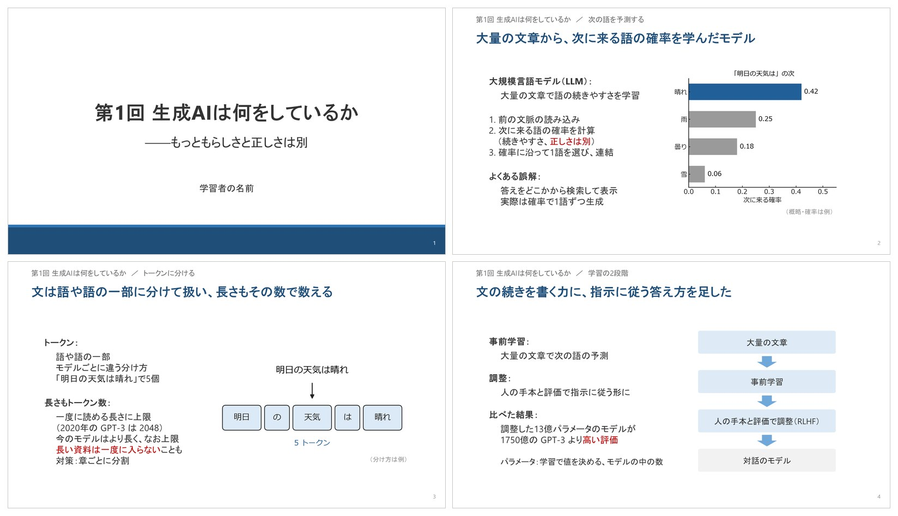
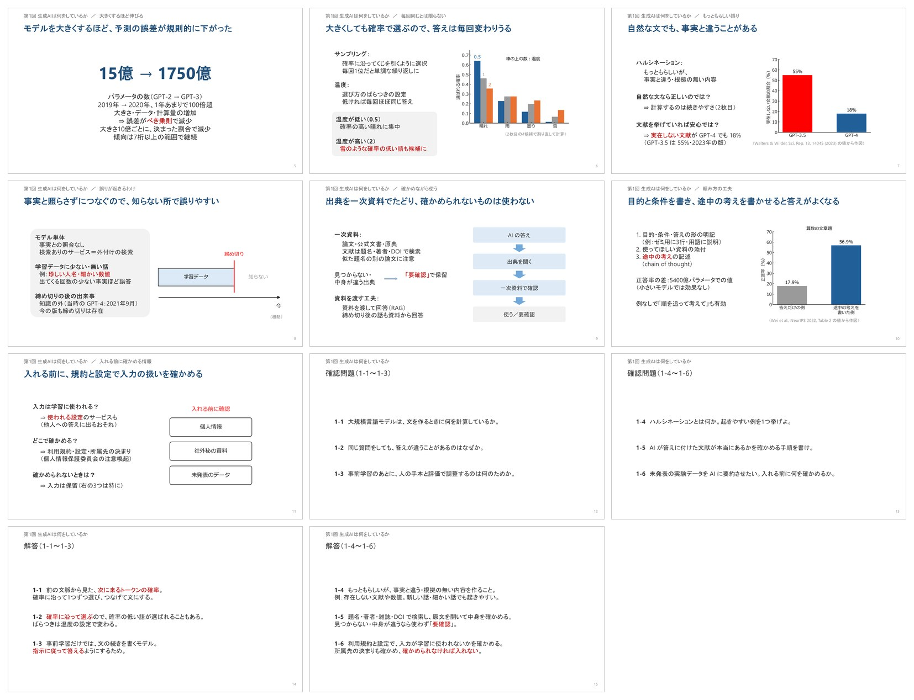
あなたが止まる所・事実・文字の組み方・量まで確かめてから渡します
説明の飛躍を、別の AI が書き出します。どこまで埋めるかは、あなたの詳しさで変わります。
くわしく
別の AI があなたの立場で読み、あなたが自分で補う前提を書き出します。結論の理由・意味の書いていない用語・あとで使う前提は、話の流れの中で埋めます。どこまで埋めるかは、あなたの詳しさに合わせます（推論距離）。
最初に問いを立て、壁を越えて最後に答えます。事実を並べるだけの講義にしません。
くわしく
あなたの疑問を「問い」にして最初の数枚で立て、意外な結果や壁を越えて、後ろのほうで答えます。枚と枚のつながり（そして・しかし・だから）まで決めて、事実を並べるだけの講義にしません。
数値や事実は、出典と最新の版を確かめてから使います。取れない事実は「要確認」と印を付けます。
くわしく
数値や事実は、出典を確かめてから使います。制度の版や統計のように変わるものは、最新の版を探します。出典は、どの資料のどこかを特定できる形で書きます。裏が取れない事実は「要確認」と印を付けて、言い切りにしません。
中身に合う組み方を1枚ずつ選び、1枚100〜150字に収めます。はみ出しや重なりは、描いた画像で検査します。
くわしく
「前提 ⇒ 帰結」「ラベル＋説明」「問い → 答え」など、箇条書きだけにせず、中身に合う組み方を1枚ずつ選びます。本文は1枚100〜150字、結論の語句は赤字、確認問題は毎回6問（1枚に3問）。はみ出し・重なり・図との間隔とあわせて、実際に描いた画像でプログラムが確かめます。
文字の組み方の型を見る（型の見本帳から12枚）
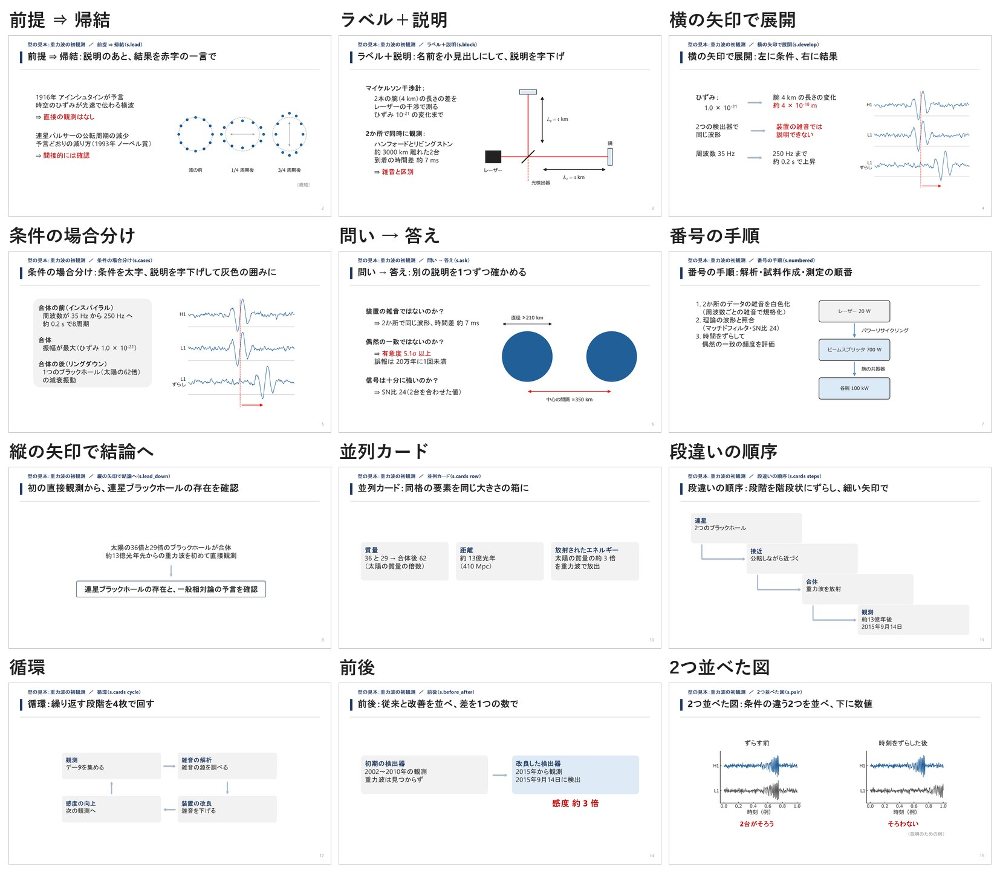
見つけるのは AI、確かめるのはプログラム。検査を通るまで先へ進みません。
講座の流れ
あなたがするのは、地図の確認と、原稿を読んでコメントや答えを書くことだけです。
1回ごとに届くもの
| ファイル | 中身 |
|---|---|
〇〇_スライド.pptx | PowerPoint のスライド。発表者ノートに読み上げ原稿が入っています。 |
〇〇_原稿.html | スライドの画像と原稿を横に並べたページ。ダブルクリックでブラウザが開きます。コメントと確認問題の答えもここに書きます。 |
〇〇_質問回答_スライド.pptx | コメントと確認問題の答えに返事をするデッキ。コメントを書き出して頼んだときだけ作られます。 |
使い方
はじめに
1回の発表のスライドを作ります。ゼミ（論文紹介・教科書の輪読）、学会などの研究発表、自分の理解を確かめる「ひとりゼミ」に使えます。
できること
資料をフォルダの一番上に入れて、AI エージェント（Codex や Claude Code など）に「スライドにして」と頼みます。読み上げ原稿つきのスライドができあがります。
資料は、論文や教科書の PDF のほか、研究発表なら結果の図・前の発表のスライド・メモだけでもかまいません。AI が発表ごとのフォルダの 資料/ に分けて格納し、
目的・各図で見えること・結論がファイルに無ければ、チャットで聞いてから作ります（背景と方法は資料から下書きします）。
発表の予定がなくても使えます。資料を人に説明できる形にまとめてみると、自分がどこをわかっていないかが見えてきます（ひとりゼミ）。
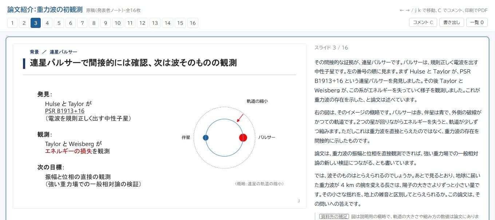
見本のスライドを全部見る（16枚）
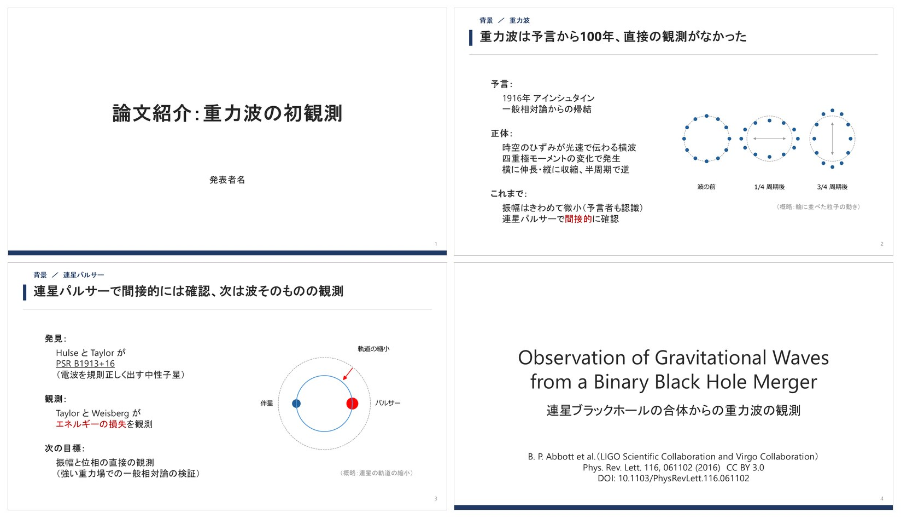
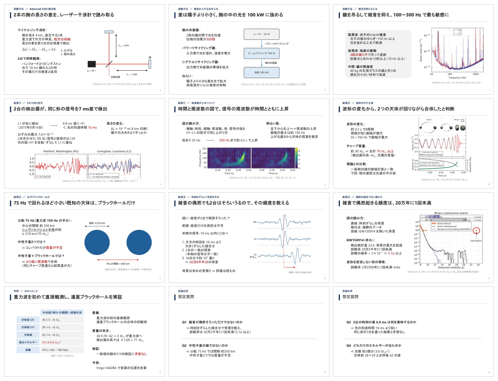
見た目だけでなく、聞き手が止まる所まで確かめてから渡します
説明の飛躍を、別の AI が書き出します。どこまで埋めるかは、聞き手の詳しさで変わります。
くわしく
別の AI が聞き手の立場で読み、聞き手が自分で補う前提を書き出します。結論の理由・意味の書いていない用語・あとで使う前提を、聞き手の詳しさに合わせて言い足しで埋めます（推論距離）。
問いを立てたら、すぐ結論を言い、あとの枚で根拠を示します。山場の無い発表にしません。
くわしく
発表の問い（何を確かめたいか）を前のほうで立て、すぐ後の枚で結論と、それを支える柱を見せます（結論から話す形。聞き手が途中で迷いません）。あとの枚は柱の順に根拠を示し、最後にもう一度結論を言います。最後に答えを回収する形がよければ、オプション「答えの位置」を「後」にします。枚と枚のつながり（そして・しかし・だから）まで決めて、山場の無い発表にしません。
中身に合う組み方を1枚ずつ選び、1枚100〜150字に収めます。はみ出しや重なりは、描いた画像で検査します。
くわしく
「前提 ⇒ 帰結」「ラベル＋説明」「問い → 答え」など、中身に合う組み方を1枚ずつ選びます。あなたの過去のデッキの癖にも寄せられます（「テンプレート」の章の「追加する」）。本文は1枚100〜150字、結論の語句は赤字。はみ出し・重なり・図との間隔とあわせて、実際に描いた画像でプログラムが確かめます。
聞かれそうな質問を4問決め、最後の2枚に回答案を載せます。戻るとよい枚は、原稿に書きます。
くわしく
発表のあと聞かれそうな質問を4問、構成案の段階で決め、最後に1枚2組で2枚置きます。答えるときに戻るとよい枚は、原稿に書いておきます（「詳しくは13枚目に戻ると…」）。
文字の組み方の型を見る（型の見本帳から12枚）
見つけるのは AI、確かめるのはプログラム。検査を通るまで先へ進みません。
流れ
あなたが答えるのは、最初の設定の確認と、構成案の確認の2回だけです（最初の確認では、聞き手がテーマにどのくらい詳しいかを聞かれます。発表時間は任意です）。 構成案の確認は「任せる」と言えば省けます。
届くもの
| ファイル | 中身 |
|---|---|
〇〇_スライド.pptx | PowerPoint のスライド。発表者ノートに読み上げ原稿が入っています。 |
〇〇_原稿.html | スライドの画像と原稿を横に並べたページ。ダブルクリックでブラウザが開きます。発表の練習や、読み返しに使えます。 |
〇〇_質問回答_スライド.pptx | 原稿のページに書いた疑問点に答えるデッキ。コメントを書き出して頼んだときだけ作られます。 |
できた原稿を読み、わからない所にコメントしておくと、答えのデッキで理解を固められます。
使い方
準備
一式を解凍して、フォルダを AI エージェントで開いて頼むだけです。足りない部品は、最初に AI が聞いてから入れます。
必要なもの
| もの | 何に使うか |
|---|---|
| AI エージェント | スキルを動かす本体です。Codex・Claude Code・Antigravity・GitHub Copilot で、短いデッキを最後まで作れることを確かめています。軽いモデルは図や事実の確認が甘くなるので、標準以上のモデルをおすすめします。 |
| Python 3.10 以上 | スライドと図を作るプログラムを動かします。 |
| PowerPoint か LibreOffice（どちらか） | できたスライドを実際に描いて検査するためと、原稿のページを作るために使います。Windows の PowerPoint があればそれを使います。 無ければ、無料の LibreOffice で代わりに描けます（検査はやや甘めなので、最後は画像を目で確かめます。Mac・Linux ではまだ試していません）。 どちらも無くても、スライド（.pptx）までは作れます。 |
| 日本語フォント | Windows は Meiryo・Yu Gothic、Mac はヒラギノ（どちらも最初から入っています）。Linux は Noto Sans CJK を入れます。 |
そろっているかどうかは、AI に頼めば表にして返してくれます（初めて使うときは、頼まなくても最初に確かめます）。
LibreOffice の入れ方
| Windows | 公式サイト libreoffice.org から、または winget install TheDocumentFoundation.LibreOffice |
| Mac | 公式サイトから、または brew install --cask libreoffice |
| Linux | sudo apt install libreoffice-impress |
入れるのはあなたです。AI は入れ方を案内するだけで、あなたが「入れて」と頼んだときだけ、確認してから入れます。
手順
- 一式をダウンロードして解凍するスキル入りの作業フォルダ一式
sensei-slides.zipを、最新版のダウンロード（GitHub の Releases）から落として解凍します。 フォルダの名前は変えてかまいません（「発表」「講座」など）。 - 準備は AI に任せてよい頼むと最初に、部品と PowerPoint・フォントがそろっているかを確かめ、足りない部品は、入れてよいかを聞いてから作業フォルダの仮想環境（
.venv）に入れます（数分、最初の1回だけ）。 自分で先に済ませるなら.setup/準備.batをダブルクリックします（Mac・Linux はターミナルでsh .setup/準備.sh）。 - フォルダをエージェントで開いて頼むCodex・Claude Code・Antigravity・VS Code の Copilot でこのフォルダを開き、
「〇〇の講座を作って」「〇〇.pdf のスライドを作って」と頼みます。
開き方：VS Code（Copilot・Codex の拡張）なら「ファイル → フォルダーを開く」でこのフォルダを選び、チャット欄に書きます。
Claude Code や Codex をターミナルで使うなら、このフォルダに移動（
cd）してから起動します。 （慣れた人向け：仮想環境を有効にする操作は要りません。スキルが.venvの Python を自分で使います） - 最初の質問に答えるあなたがテーマにどのくらい詳しいか（初学者／多少知っている／かなり知っている）聞き手がテーマにどのくらい詳しいか（初学者／多少知っている／かなり知っている）を聞かれます。 これだけは必須で、答えるまで先に進みません（発表時間は、決まっていれば一緒に答えます）。続けて、スライドに使う資料（PDF・図・前の発表のスライド・メモ）があれば、このフォルダの一番上に入れて伝えます（無ければテーマだけから作ります）。最後に、任意であなたの聞き手の専門・研究テーマ・よく知っていることを聞かれます。 書くと、知らない言葉の言い換えと、止まる所の見つけ方がよくなります。答えは、そのスライドの設定の一覧に入ります（スキル全体の共通の設定ファイルはありません）。
| 一式の中身 | 何のためか |
|---|---|
.agents/skills/sensei-slides/ | スキル（Codex・Antigravity・VS Code の Copilot が読む） |
.claude/skills/sensei-slides/ | 同じスキル（Claude Code が読む） |
.codex/rules/sensei-slides.rules | Codex で PowerPoint を使う3つの作業だけを、確認なしで動かす決まり（フォルダを「信頼する」にしたときに読まれる） |
スキルの使い方.html | このページ |
.setup/準備.bat・準備.sh | 自分で準備するときのスクリプト（AI に任せるなら使わない） |
この説明で references/…・examples/…・scripts/… と書いたものは、.agents/skills/sensei-slides/ の中にあります
（.agents は名前が「.」で始まるので、エクスプローラーで見えないときは「表示 → 隠しファイル」をオンにします）。
GitHub Copilot の CLI で使うときは、.agents/skills/sensei-slides を .github/skills/sensei-slides に写します。
スキルを新しくするときは、新しい一式の .agents・.claude・.codex で置き換えます（作ったスライドと、その設定の一覧はそのまま）。
自分のフォルダにスキルだけ入れるとき
今あるフォルダで使うなら、このリポジトリのフォルダを、使うツールの場所に sensei-slides という名前のまま置きます。
フォルダ名を変えると読み込まないツールがあります。
| ツール | 置く場所（スライドを作るフォルダの中） |
|---|---|
| Codex | .agents/skills/sensei-slides/ |
| Claude Code | .claude/skills/sensei-slides/ |
| Antigravity | .agents/skills/sensei-slides/ |
| GitHub Copilot | .github/skills/sensei-slides/（VS Code なら .agents/skills/ でも可） |
そのあと、スライドを作るフォルダで仮想環境を作って部品を入れます（Windows のコマンドプロンプト）。
python -m venv .venv
.venv\Scripts\python -m pip install -r .agents\skills\sensei-slides\requirements.txt
2行目の場所は、スキルを置いた場所に合わせて変えます（例は Codex の場所）。Mac / Linux では python3 -m venv .venv と
.venv/bin/python -m pip install -r .agents/skills/sensei-slides/requirements.txt。
一式の .setup フォルダをこのフォルダに写して、.setup/準備.bat をダブルクリックしても同じです。
仮想環境を使わないとき
仮想環境を使わずに、ふだんの Python に pip install -r requirements.txt で入れても動きます（.venv が無ければ、スキルはふだんの Python を使います）。
使うツールやモデルを変えたいとき
手順書は、特定のエージェントに頼らない中立の言葉（【質問】【別のエージェント】など）で書いてあります。
エージェントは最初に references/agents.md の対応表を読み、使っているツールの道具に読み替えます。モデルは、あなたが選んだメインのモデルで全部を進めます。
ほかのモデルを使いたいときは、頼むときに言います（「レビューは〇〇で」）。
別のエージェントにレビューさせる機能が無いツールでは、レビューのときに「新しい会話を開いて、この雛形を貼ってください」と頼まれることがあります。
コマンドのたびに許可を求められるのが手間なら、references/agents.md の「許可リスト」にある行を、エージェントの設定の許可リストに登録します。python だけ、のような広い登録はしません（どんなプログラムでも確認なしで動くようになるため）。
Codex では、PowerPoint を使うスクリプトがサンドボックスの中では動きません。一式には決まり（.codex/rules/sensei-slides.rules）が入っているので、Codex でそのフォルダを「信頼する」にしておくと、描画の検査・PDF の書き出し・原稿のページ作りの3つだけが、確認なしでサンドボックスの外で動きます（自分のフォルダにスキルだけ入れたときは、assets/codex/sensei-slides.rules をそのフォルダの .codex/rules/ に写します。全部のフォルダで使うなら ~/.codex/rules/）。Codex が画面操作で PowerPoint を開こうとしたら（画面全体の表示が変わる）、止めてかまいません。
使い方
講座スライドを作る
テーマか PDF を渡すだけです。1回分ずつ進み、前の回でつまずいた所が次の回に反映されます。
頼み方の例
手元の資料（自分の卒論など）を「参考に」と添えると、講座の中で「卒論の式(2-4)は…」のように、あなたの資料とつなげて説明してくれます。
頼んだあとに起きること
- 短い質問に答える範囲・あなたの背景・ゴール・回数などを聞かれます。すでにわかっていることは聞かれません。答えなかった項目は既定の値で進み、どの値にしたかを知らせてきます。
- 全体の地図を確認する回ごとの題と「この回で言えるようになること」の表が出ます。回数や順番を直すならここで言います。
- 第1回が届くスライドと原稿のページが届きます。届くまでに、事実の裏取りと、別の AI（レビュー担当）によるレビューが済んでいます。本文が10〜15枚に収まっているか、出典から資料を特定できるかも、設計の段階でプログラムが確かめています。
- 読んで、コメントと答えを書く原稿のページで、わからない所にコメントし、確認問題に答えます。
- 「コメントした」と伝える答えのデッキが届きます。そのあと「次の回を作って」と頼むと、つまずいた所を冒頭で補った次の回が作られます。
テーマだけのときと、PDF があるとき
| 渡すもの | 中身の出どころ |
|---|---|
| テーマだけ | AI が調べて書きます。数値・式・定義は1つずつ出典を確かめ、確かめられないものは「要確認」と書きます。 |
| PDF（教科書・論文） | PDF が土台です。地図は PDF の章立てを元に、あなたに合わせて並べ直します。PDF にない補足は「資料外」と分けて書きます。 |
| テーマ＋手元の資料 | 中身は一般の文献から書きます。手元の資料は、あなたの研究とつなげる橋渡しに使います。資料は読むだけで、書き換えません。 |
原稿は「AI講義モード」
講座の原稿は、講師の AI があなたに話しかける形で書かれます。
- あなたを「あなた」と呼び、ときどき問いかけます（「どちらだと思いますか」）
- あなたの専門の言葉に置き換えて説明します（正確に対応するものだけ）
- 確認問題は「あなたならどう答えますか」。答えの添削は「あなたは〜と答えました」から始まります
研究室の後輩など、ほかの人にも見せるなら、そう伝えてください。「あなたの卒論」のような言い方をやめて、受講者全員に向けた原稿になります。
講座のフォルダ
講座ごとにフォルダができ、その中に各回のファイルと、講座のメモ（00_README.md）が入ります。
| メモの中身 | 何に使うか |
|---|---|
| 全体の地図 | 回ごとの題と、その回で言えるようになること。回を足すと更新されます。 |
| 講座ID・保存先 | コメントのファイルを講座ごとに片づけるための2行（「質問に答えてもらう」の章）。 |
| 決め事 | 記号・図の向き・呼び方。全部の回でそろえるために使います。 |
| つまずき一覧 | 確認問題で取り違えたこと。次の回の冒頭で補い、数回あとに言い換えた問題でもう一度解きます。 |
見本は examples/course/AI活用講座/00_README.md です。
使い方
発表スライドを作る
論文や教科書を1デッキにまとめます。資料の場所と範囲を言うだけです。「PowerPoint」と言わなくても伝わります。
頼み方の例
資料はフォルダの一番上に入れて頼みます（どれを使うかはファイル名で言ってもかまいません）。教科書のスキャン PDF でも、論文の PDF でも、図や前のスライドだけでも作れます。研究発表で目的・各図で見えること・いちばん言いたい結論がファイルに無いときは、AI がチャットで聞きます（背景と方法は、前のスライドや要旨から下書きします）。答えたことはそのまま 資料/方針.md に残り、そろうまで構成案には進みません。
頼んだあとに起きること
- 設定の表が出る聞き手の詳しさ・発表時間・原稿の書き方などの今の値が表で出ます。必須の項目が決まっていなければ聞かれます。 そのままでよければ「このまま進める」を選びます。
- 資料が格納されるAI が中身を確かめてから、使う資料を発表ごとのフォルダの
資料/（図・過去のスライド・その他）に写します。元のファイルはそのまま残ります。 研究発表で目的・各図で見えること・結論がファイルに無ければ、ここで聞かれます。 - 構成案を確かめる全スライドの見出しと「そのスライドの結論の一文」を並べた表が出ます。別の AI（レビュー担当）のレビューを済ませた版です。 枚数が発表時間に合っているか、聞き手が止まる所に手当てがあるかも、この段階でプログラムが確かめています。直したい所を言うか、OK を出します。
- 待つAI が図を描き、スライドを組み、PowerPoint で描いて検査します。最後に、別の AI（レビュー担当）がスライドの画像をもう一度レビューします。
- 受け取るスライドと原稿のページが届きます。描画の検査・原稿・レビューの記録がそろっているかを確かめてから渡されます。どれが AI の描いた図か、資料と照らして確かめてほしい点はどこかも、一緒に知らせてきます。
変えられる設定
頼むときに言えば変わります（「発表時間は15分で」「主要な結果に絞って」）。決まった値は、そのスライドの設定の一覧（構成案の冒頭）に残ります。
| 設定 | 選べるもの（太字が既定） |
|---|---|
| 原稿の書き方 | 発表（あなたが聞き手に話す原稿）／AI講義（AI があなたに教える原稿） |
| 発表時間 | 15分・20分・30分など。原稿の長さと枚数の目安がこれで決まります（1枚 1.5〜2分）。 |
| 枚数が少ないとき | 足さない（ただし発表時間÷2分を下回るなら、抜けている話が無いか見直す）／説明を厚くする |
| 丁寧さ | 聞き手が止まる所をどこまで埋めるか（1枚に残してよい「あとで使う前提」の飛びの数。その枚の結論の理由と知らない用語はいつも埋める）。0＝入門向け（全部埋める）／1＝専門外の聞き手／2＝同じ分野の人 |
| テンプレート | テンプレート1／テンプレート2〜8（構造が違う。見やすさの順）／自分で追加したもの（「テンプレート」の章） |
| 色 | テンプレートの標準の色／青・紺とオレンジ・生成りと山吹・藍・青緑・珊瑚・墨と山吹・深緑・グレーと赤・墨と藍 |
| 答えの位置 | 発表は先（問いのすぐ後で結論、あとの枚で根拠）／講座は後（後ろのほうで答えを回収）。どちらも変えられます |
| 範囲 | 全部の結果／主要な結果に絞る |
| 議論のスライド | 入れない／入れる（疑問点・限界・自分の研究との関係を1枚） |
| 構成案の確認 | 見せる／任せる（見せずに完成まで進める） |
途中で「オプションを見せて」と言うと、そのときの値の表がもう一度出ます。
できたあとに直す
直したあとも、描いて検査するところからやり直してから渡されます。
使い方
テンプレート
スライドの見た目（色・帯・タイトルの位置・見出しの印）を決めます。中身はそのままで、見た目だけを変えられます。
一覧
構造（タイトルの置き方・結論の置き場・本文の場所）の違う8つを同梱しています。どれにも標準の色があり、色は言えば変えられます。名前を言わなければ テンプレート1 が使われます。構造の名前（「結論の囲み」など）でも選べます。
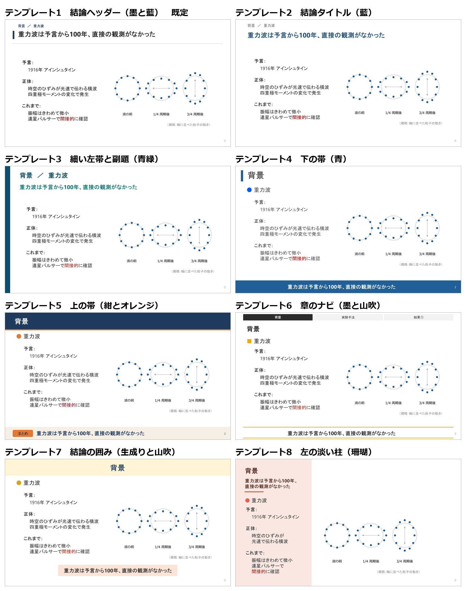
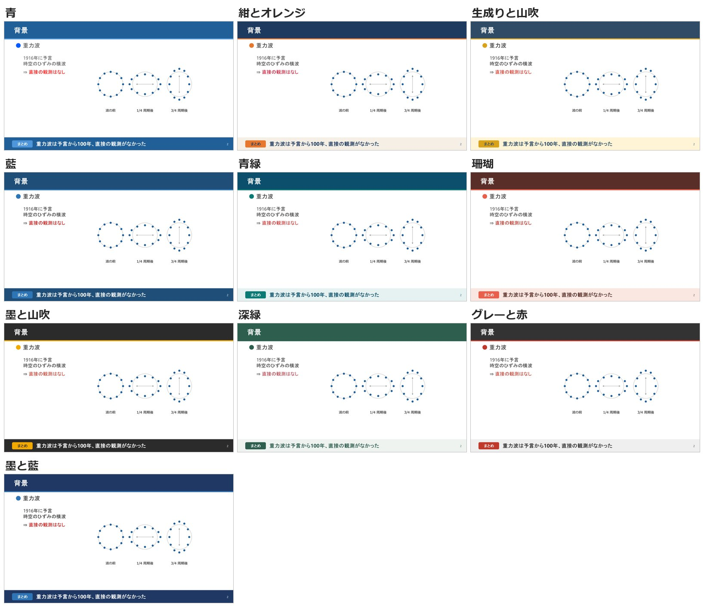
| 名前 | 構造 |
|---|---|
| テンプレート1（既定） | 結論ヘッダー：上に小さく話題と見出し、その下に大きく結論の一文（左に主色の短い縦棒）、細い線で本文と分ける。下の帯は無く、本文が一番広い（標準の色：墨と藍） |
| テンプレート2 | 結論タイトル：上に小さく話題、その下に大きく結論の一文。下の帯は無し（結論を見出しにする形）（標準の色：藍） |
| テンプレート3 | 細い左帯と副題：左端に主色の細い帯、大きなタイトルの下に結論の副題の1行。下の帯は無し（標準の色：青緑） |
| テンプレート4 | 下の帯：左上の縦棒とタイトル、下の帯に結論の1行（ゼミの基本の形）（標準の色：青） |
| テンプレート5 | 上の帯：上の濃い帯にタイトル、下に「まとめ」の札つきの淡い帯（標準の色：紺とオレンジ） |
| テンプレート6 | 章のナビ：上に章の並び（今の章を主色に）、その下にタイトル、下に線で挟んだ結論の1行（長い発表）（標準の色：墨と山吹） |
| テンプレート7 | 結論の囲み：上に淡い帯（タイトルは中央）、下の帯は無く、結論は淡い色の囲みに（学会発表）（標準の色：生成りと山吹） |
| テンプレート8 | 左の淡い柱：左の 34% の淡い柱にタイトル・結論・短い要点、右に図を大きく（図が主役の枚）（標準の色：珊瑚） |
選ぶ
選んだテンプレートと色は、そのスライドの設定の一覧に入ります。続きもの（次の回・次の節）は前の回と同じものを使います。自分で追加したテンプレートも、名前で同じように選べます。
追加する（手持ちのスライドから）
- 元になるスライドを置く使いたい見た目のデッキを1つ（研究室で使っている発表のスライドなど）。大きさは 16:9 にします。
中にスライドが入っていてかまいません。作業フォルダの
スライドテンプレート/に入れるか、場所を AI に伝えます。 - 頼むこのスライドからテンプレを作って。名前は「研究室」
- 分析の表を見るAI ではなくプログラムが、元のスライドを約50項目にわたって分析します。どの AI に頼んでも同じ結果になります。 大きさ・使われたレイアウト・タイトルの位置と色・見出しの印（● ■ など）と色・本文の大きさ・強調の色・下の帯・表の塗り・余白・図の置き方などと、 研究発表のデザインの手引きにある目安が並びます。目安から外れている所は知らせてくるだけで、勝手には直されません。
- 3つだけ答える本文に使うレイアウト、下のまとめの帯（元のまま／描き足す／無し）、強調の色。ほかは表のとおりに作られます。
- 試しに組んだものを見る見本の論文紹介の数枚を、新しいテンプレートで組んだ画像が届きます。テンプレート1 で組んだものと並べて見比べます。
- 直す色・見出しの印・帯の寄せは、言えば直ります。 見出しの印を■に、色は濃い緑で タイトルの位置やロゴ・帯の形を変えたいときは、元のスライドのスライドマスターを PowerPoint で直して置き直し、「研究室のテンプレを作り直して」と頼みます。
作ったテンプレートは、作業フォルダの スライドテンプレート/ に、テンプレート・見た目の設定・分析の表の3つで残ります。
使い方
原稿とコメント
〇〇_原稿.html で原稿を読み、わからないところにその場でコメントを付けます。
原稿を読む
ファイルをダブルクリックすると、ブラウザで開きます。左にスライド、右に原稿が並びます。1つのファイルで完結しているので、 ネットにつながっていなくても開けますし、人に渡しても開けます。
| 操作 | やり方 |
|---|---|
| 次・前のスライド | → ← か j k。上の番号を押すとそのスライドへ飛びます。 |
| PDF にする | ブラウザの印刷で「PDF に保存」。1枚ずつページが分かれます。 |
コメントを付ける
上の「コメント」ボタンか C キーで、コメントモードにします（もう一度 C か Esc で終わります）。 付け方は3つあります。付け方は2つあります。
原稿の文章に付ける
わからない文章をドラッグで選ぶと、入力欄が出ます。書いて「保存」（Ctrl+Enter）を押します。
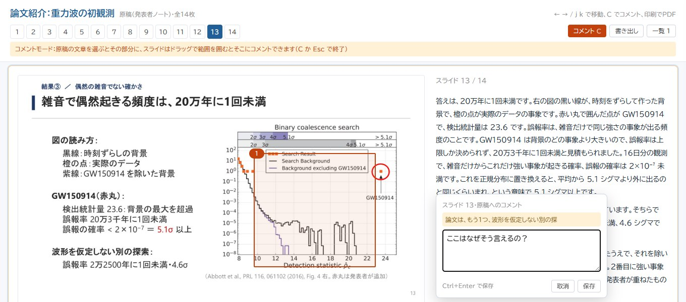
スライドの範囲に付ける
スライドの上をドラッグして範囲を囲むと、その範囲へのコメントになります。図や式の一部を指したいときに使います。
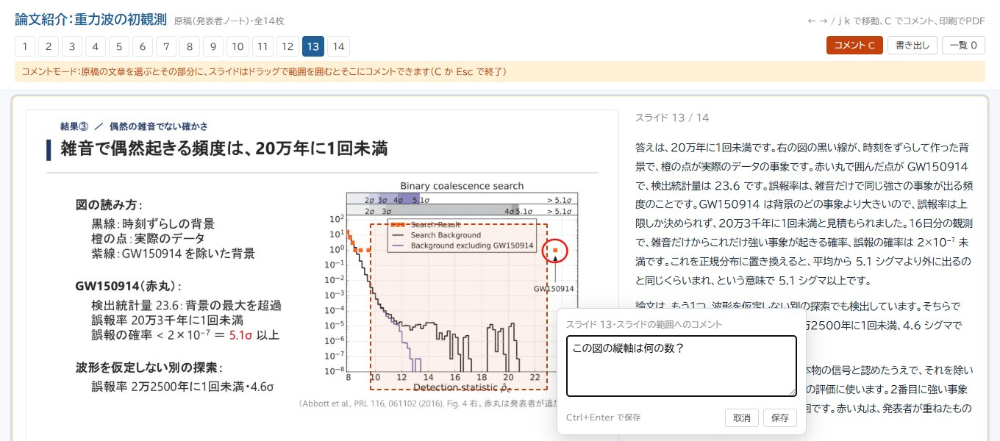
原稿を通して読み、「ここを聞かれたら答えられない」と思った所にコメントしておくのがおすすめです。
確認問題に答える
講座の確認問題のスライドでは、原稿の下に「1-1 に答える」のようなボタンが出ます。押して答えを書くと、まとめて添削してもらえます。 コメントモードにしなくても使えます。
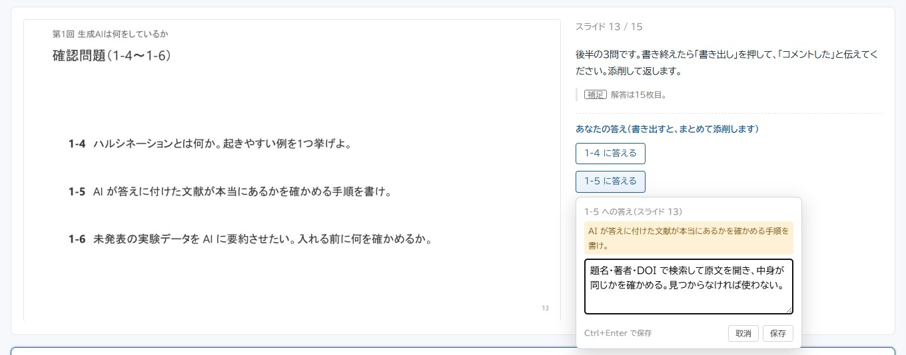
付けたコメントを直す
色の付いた文章か、囲んだ枠を押すと、入力欄が開いて直せます。消すときは入力欄の「削除」を押します。
コメントの一覧
右上の「一覧」か L キーで開きます。一覧のコメントを押すと、その場所へ移動して光ります。
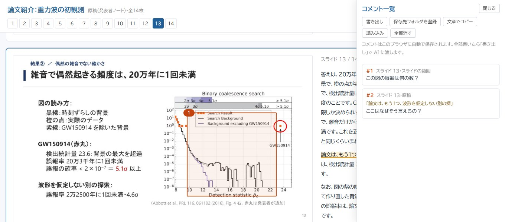
| ボタン | 何が起きるか |
|---|---|
| 書き出し | コメントと答えを1つのファイル（〇〇_コメント.json）にして、ダウンロードフォルダに保存します。AI に渡すのはこのファイルです。 |
| 文章でコピー | コメントを文章にしてコピーします。チャットに貼り付けて渡すこともできます。 |
| 保存先フォルダを登録 | しなくてもよい設定です。一度フォルダを選ぶと、以後の書き出しはダウンロードを通さず、そのフォルダへ直接保存されます（使えないブラウザもあります）。 AI があとでファイルを移す「書き出しの保存先」（「質問に答えてもらう」の章）とは別の設定です。 |
| 読み込み | 書き出したファイルを読み込んで、コメントを戻します。別のパソコンで続きを書くときに使います。 |
| 全部消す | このページのコメントを全部消します。 |
使い方
質問に答えてもらう
コメントを書き出して「コメントした」と伝えると、答えのデッキが届きます。
流れ
- 書き出す原稿のページで「書き出し」を押します。ファイルはダウンロードフォルダに入ります。
- 伝えるエージェントに「コメントした」と言います。ファイルの場所を言わなくても、ダウンロードフォルダから新しいものを探してくれます。
- 受け取る
〇〇_質問回答_スライド.pptxと〇〇_質問回答_原稿.htmlが届きます。 質問ごとに1〜2枚（同じ点への質問はまとめて1枚）で、どのスライドのどこへの質問かが本文の1行目に書いてあります。
答えのデッキでわかること
- 質問ごとの答え（資料にない話は「資料外」と分けて書かれます）
- 確認問題の答えの添削（○・△・× と、足りない点）。元の問題文も一緒に載ります
- 元のスライドや原稿に誤りがあったときは、元のデッキをどう直したか
答えのデッキにもコメントできます。続きの質問は、同じ答えのデッキの最後に足されます（新しいデッキは増えません）。
コメントのファイルの片づけ
講座のメモ（00_README.md）には、次の2行が最初から書いてあります。このおかげで、コメントのファイルは講座ごとに分けて片づけられます。あなたが何かをする必要はありません。
しなくてもよい設定です。スライドと原稿のページがあるフォルダにメモ（00_README.md など）を置き、次の2行を書いておくと、
コメントのファイルがそのフォルダへ片づけられます。講座ID は、メモを書いたあとに原稿のページを作り直すと、ファイル名に付きます。
| 書く行 | 意味 |
|---|---|
- 書き出しの保存先: このフォルダ | AI がコメントを読むときに、ダウンロードフォルダからこのフォルダへ移します （原稿のページの「保存先フォルダを登録」とは別の設定）。 |
- 講座ID: AI | 書き出すファイル名の頭に付く英字（AI01_〇〇_コメント.jsonAI_〇〇_コメント.json）。講座ごとに別の英字にします。名前は「講座ID」ですが、ゼミの資料のフォルダでもこのまま使えます。同じ英字のコメントだけがまとめて移されます。 |
使い方
困ったとき
よくある質問です。押すと開きます。
講座を全部まとめて作れる？
「まとめて作って」と言えば、続けて作ります。ただし前の回のつまずきを次の回に入れられないので、ふだんは1回ずつがおすすめです。
トークンをどのくらい使う？
少なくはありません。資料の読み込み・図の描き直し・描画の検査のやり直し・別の AI（レビュー担当）によるレビューを、1デッキごとに行うからです。 目安は、レビュー担当1人分で約4万〜12.5万トークン、約50頁の論文をまるごと読ませると約18万トークンです。
自分の使い方で何本作れるかは、ツールと時期で変わります。1デッキ作ったあとに、ツールの使用量の画面で割合を見て判断してください。
使用量を減らすコツは4つです。メインのモデルを標準くらいのものにする（別のエージェントもメインと同じモデルで動きます）。1回のデッキを本文10〜15枚に収める。資料は使う章だけ読ませる。続きものは同じ会話で作る。 上限に近づいて作業を区切っても、作業フォルダに途中の状態が残るので、あとで「続きを作って」と頼めば続けられます。
論文や教科書の図を載せて大丈夫？
研究室のゼミ（授業での利用）と自分の勉強（私的使用）なら、ふつうは大丈夫です。スキルは切り出した図に、必ず出典を付けます。
スライドや原稿のページ（スライドの画像が入っています）をネットに上げる・研究室の外に配る・学会や会社で使うときは、 論文のライセンス（CC BY など。論文の最初か最後のページに書いてあります）か、出版社の許可を確かめてください。
Mac で使える？
スライド（.pptx）と図までは作れます。描いて検査する部分と原稿のページ作りは、Windows の PowerPoint で確かめています。LibreOffice があれば Mac でも描けるはずですが、まだ試していません。
LibreOffice を使わないときは、できたスライドを PowerPoint で開いて目で確かめ、PDF に書き出してください。原稿のページは、その PDF を渡せば作れます
（python scripts/notes_html.py 〇〇_スライド.pptx --pdf 〇〇.pdf）。
図の文字が四角や別の字体になる
日本語フォント（Meiryo か Yu Gothic）が見つかっていないときに起きます。Windows 以外では、日本語フォントを入れてから図を描き直してください。
直したはずの所が、画像では直っていない
PowerPoint が古い版を開いていることがあります（クラウド同期のフォルダで起きやすい）。描き直しても続くときは、 画面に出ていない PowerPoint が残っていないかタスクマネージャーで確かめてください。
書いたコメントが見えなくなった
コメントはブラウザごとに保存されます。書いたときと同じブラウザで開いてください。 書き出したファイルがあれば、一覧の「読み込み」で戻せます。
原稿を直したら、コメントの印が消えた
選んだ文章が原稿から無くなると、一覧に「原稿が変わって、選んだ文章が見つかりません」と出ます。コメントそのものは残っているので、そのまま書き出せます。
スライドの文字が多い・図が小さいと感じる
そのまま伝えてください（「3枚目の文字を減らして」）。目安は1枚100〜150字、1行は図の横なら20字（図がなければ25字）、図の中の文字は14ptです。 スキルはこの目安に寄せて作りますが、気になる所は言えば直してくれます。